MDS lived across multiple Figma libraries, React, Flutter and a shared token system. Over time, inconsistencies had accumulated between them, while the Figma setup itself had become outdated and harder to maintain.
I tackled this through two connected initiatives and the migration that followed:
01 · Cross-platform audit & alignment
Audit and align 62 components across Figma, React and Flutter.
02 · MDS 2.0
Modernise the Figma architecture around one Core library, variables and themes.
03 · Migration
Give ~9–11 product teams a safe, incremental path onto the new foundations.
I led an audit of 62 core components across Figma, React and Flutter, comparing naming, properties, structure and visual differences.
Together with engineering, we reviewed the findings and decided what needed to change where. Alignment didn't always mean making everything identical. Platform conventions and potential breaking changes were also part of those decisions.
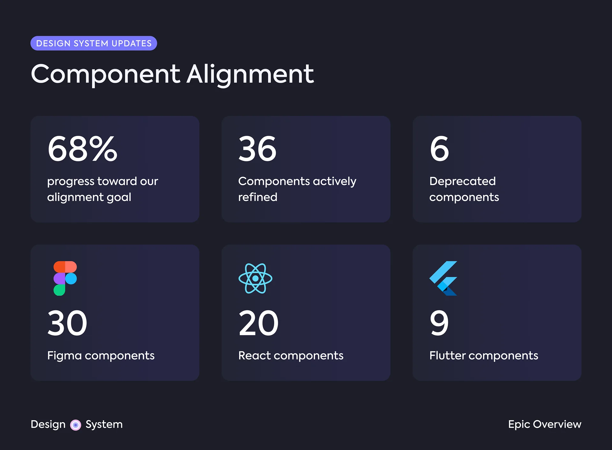
The audit became a backlog I created so design and engineering could work together. On the Figma side, I refined 30 components, from smaller naming and property changes to structural changes that required coordination with engineering.
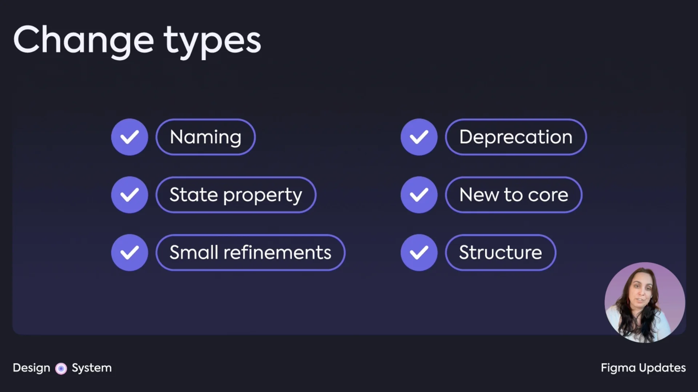
A few examples:
| What we found | What changed | |
|---|---|---|
| State properties |
Disabled and Loading were values
of a State variant property in Figma, while
code showed them as independent boolean props.
|
Converted them to boolean properties, bringing Figma closer to the component API. |
| Progress Indicator | The Figma component had more internal structure than was needed. | Simplified the structure to better reflect how the component worked in code. |
| Dialog footer | Figma exposed different footer configurations than the coded component. | Aligned the available options with code, requiring a structural change to the Figma component. |
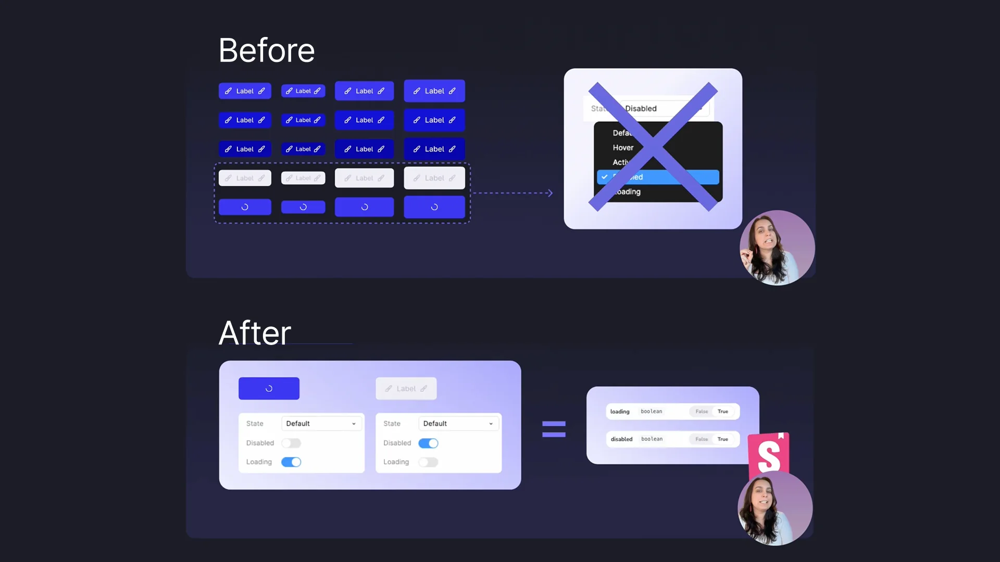
One recurring issue was terminology, so I also standardised
component naming and documented it in a shared glossary for
designers and engineers. This included conventions such as
Start and End instead of
Left and Right, while also documenting
intentional differences between design and code.
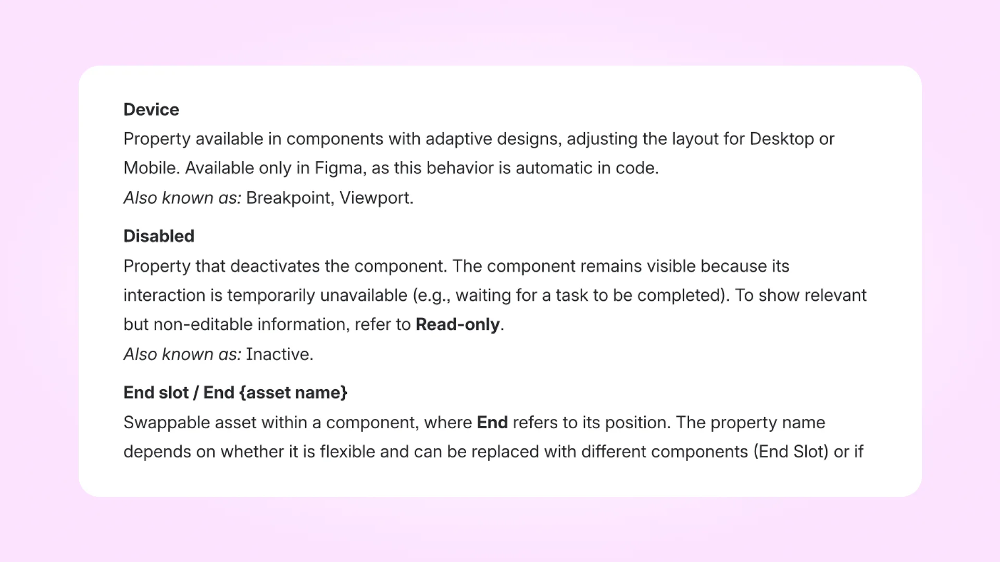
By the end of this first phase, 36 of the 62 audited components had been actively refined across Figma, React and Flutter.
While the alignment work addressed inconsistencies at component level, Figma had another problem: the system was still built around an older, fragmented architecture.
B2B and GX lived in separate Core libraries (yes, two “Core” libraries), foundations relied heavily on styles, and themes were duplicated at component level. GX, for example, had separate Light and Dark component sets, so the same component had to be maintained twice. Every time!
Unsurprisingly, inconsistencies became almost inevitable.
I led the Figma-side migration to MDS 2.0, consolidating the Core libraries and restructuring the foundations around variables and themes.
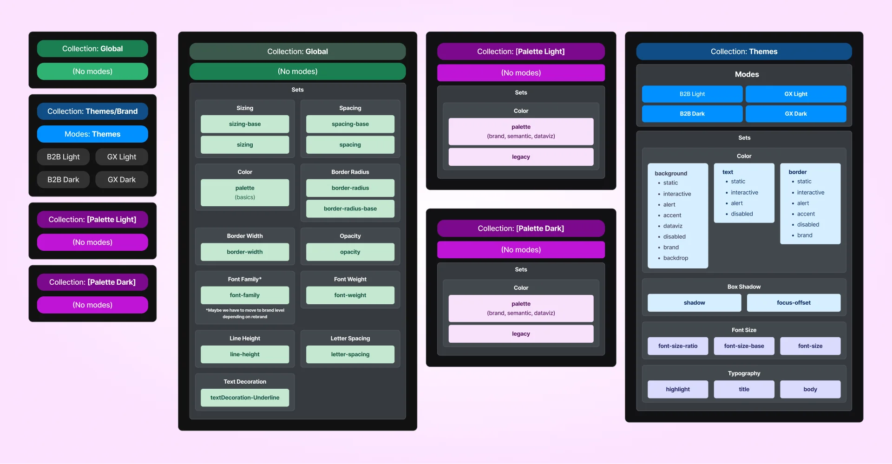
I reorganised the Figma foundations around variables, replacing legacy styles with one shared structure supporting B2B and GX across Light and Dark modes.
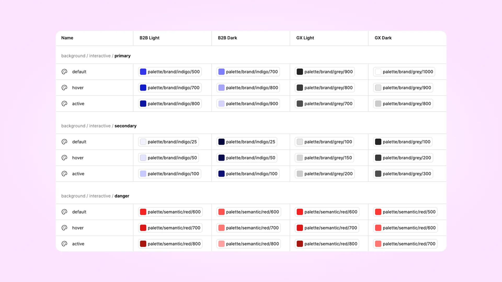
I maintained token changes through Tokens Studio, where I updated token structure and naming and pushed changes to the repository through PRs.
I worked closely with our design-system engineer, who maintained the token transformation and integration into code. We reviewed changes together to keep the meaning and intent of the foundations aligned between design and code without requiring both sides to have identical technical structures.
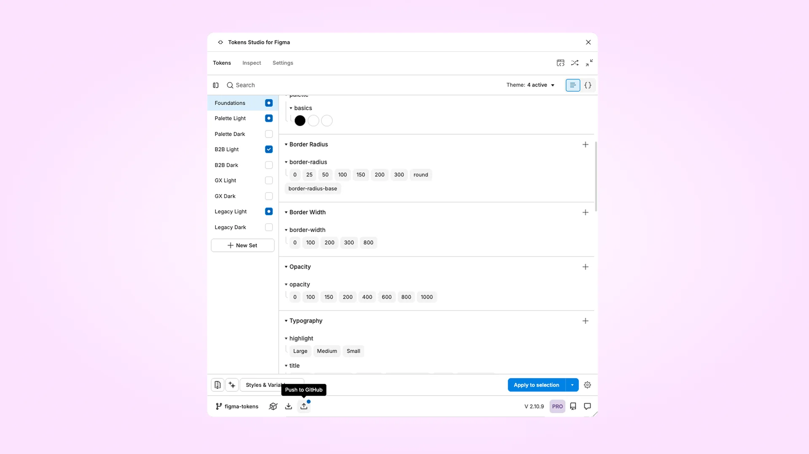
Existing product files still depended on the previous libraries, styles, overrides and local changes, so a company-wide switch would have created unnecessary risk.
I designed an incremental migration across ~9–11 product teams: new work could start with MDS 2.0 immediately, while existing files moved when they became active or relevant for development. Designers could migrate independently using a step-by-step guide and playground before touching production files.
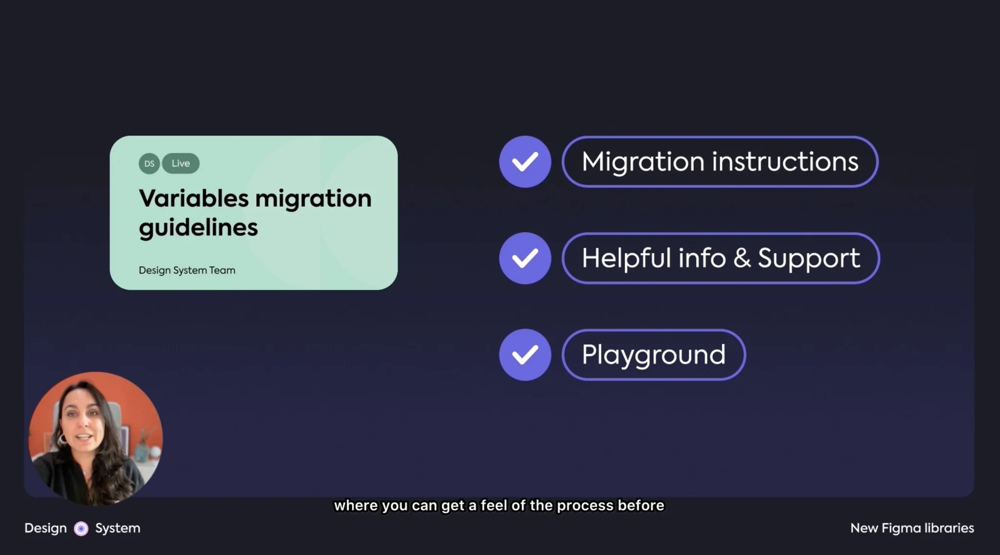
Testing surfaced cases that couldn't be migrated automatically, including overrides, deprecated components, hidden layers, local styles and legacy tokens. I documented the known issues, fallbacks and validation steps so designers could troubleshoot migrations independently. And overall the playground and instructions were well received.
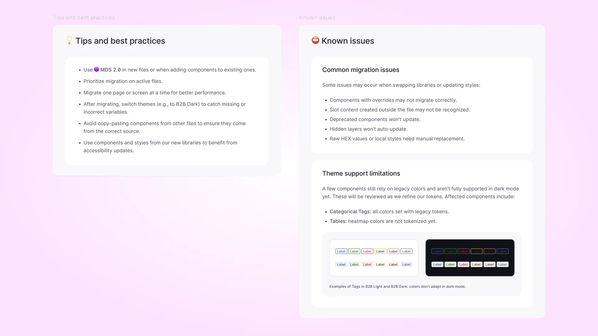
Most of the process and instructions were also uploaded to our live documentation.
The previous libraries remained available during the transition but stopped receiving updates, giving teams time to move active work without requiring a disruptive company-wide switch.
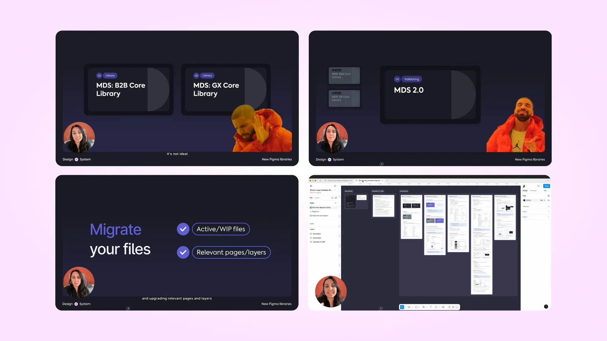
Together, the alignment work, MDS 2.0 and the migration addressed the same underlying problem at different levels: reducing the gap between how the system was designed, implemented and maintained.
We aligned 68% of the planned Core component work in one quarter, moved Figma from duplicated libraries and themes to one shared architecture, and gave product teams an incremental way to move onto it without forcing a company-wide migration.
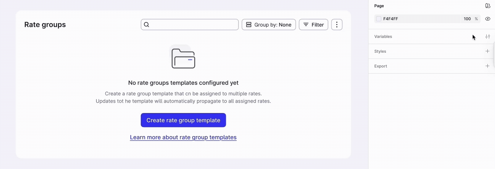
I'd approach alignment less as a periodic clean-up and more as part of routine maintenance.
Clearer, more structured design-system documentation and rules can make more of that maintenance repeatable, especially now that AI can consume those sources too.
With these new ways of working, agents can help find recurring inconsistencies across design, code and documentation, trace dependencies, turn findings into tasks, automate straightforward fixes and validate the results against defined rules.
Large system changes are easy to postpone when touching one thing might affect components used multiple times across hundreds of live features. Making more of that work systematic could shorten the path from inconsistency → decision → action, while leaving more time for the decisions that actually need judgment.